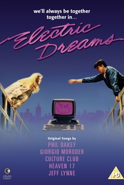

|  |
Diretor: Steve Barron Com: Lenny von Dohlen, Virginia Madsen, Bud Cort Gênero: Romance/Comédia - Legendado/Dublado Censura: Livre Lançamento: 20 de julho de 1984 Tempo de duração: 97 minutos Sinopse: O arquiteto Miles Harding apaixona-se por sua vizinha do andar superior. O problema é que seu computador também se enamora da bela violoncelista e, para afastar o seu rival começa a causar-lhe diversas dificuldades, desde a devolução de cheques até problemas com a polícia. Assistir |
 Entrou com: fulano@gmail.com || Sair
Entrou com: fulano@gmail.com || Sair